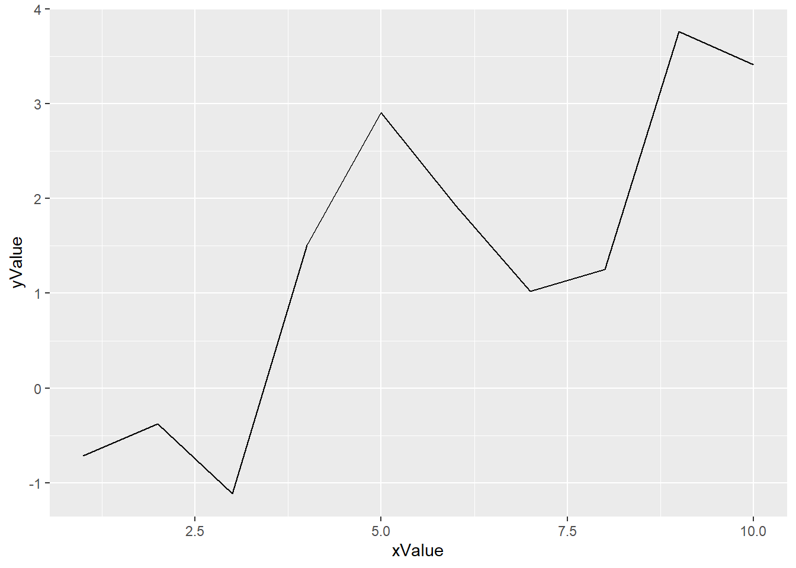
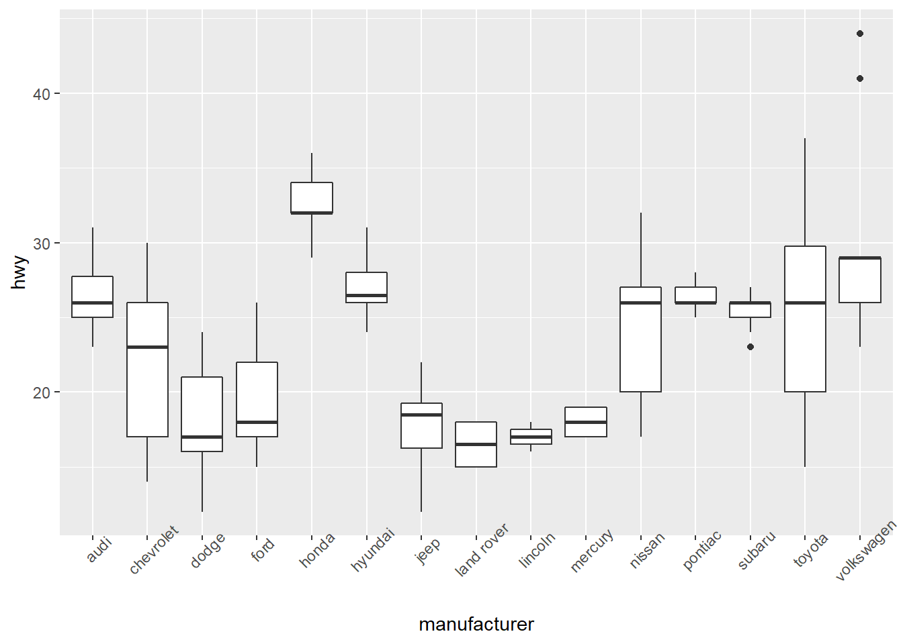
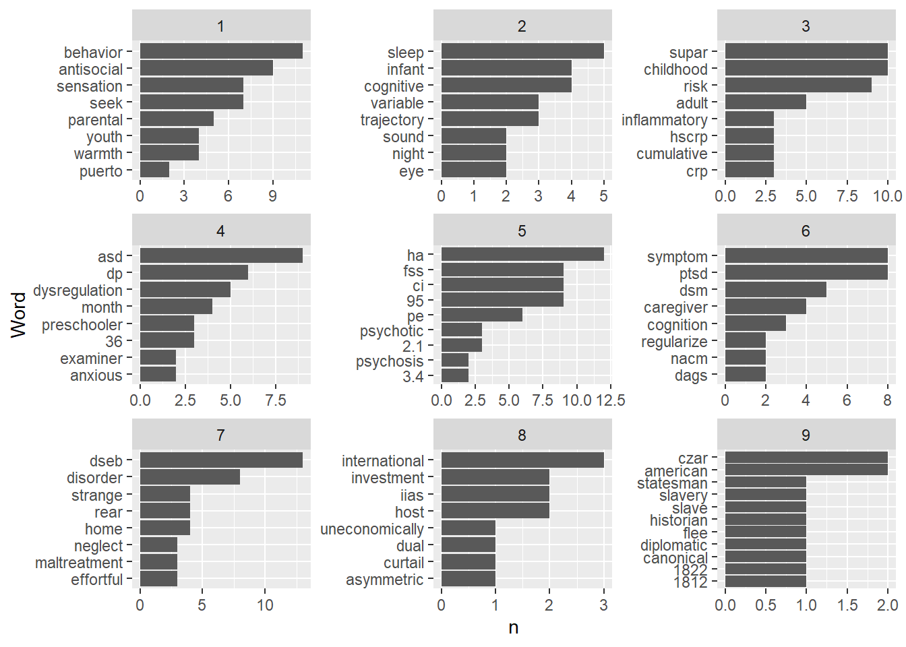
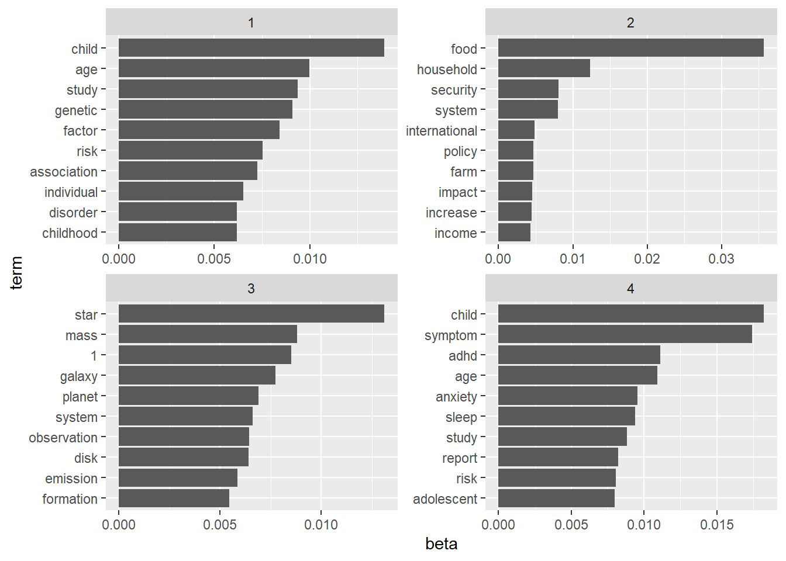
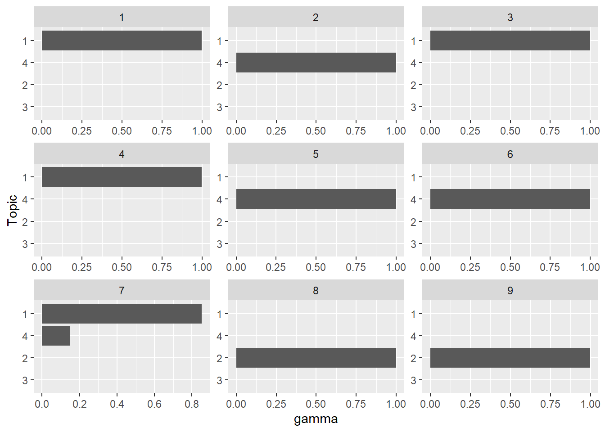

Chapter 8 - Text mining
0.1 Learning objectives
Tidytext
Tokenization
Stop words
Sentiment analysis
TF-IDF
Topic modelling
0.2 Introduction
Text-mining could be a course of it’s own. This short introduction introduces a few of the most important concepts and provides examples of of to perform a range of text miningtasks. We will introduce a few new packages:
tidytext: a package that contains a lot of function to work with text in a tidy format.
textstem:to perform stemming and lemmatization on tokens
wordcloud2: to make wordclouds
vader: to perform sentiment analysis
topicmodels: to do topic modelling
0.3 The dataset
The dataset that we will use in this chapter consists of the the abstracts of 1672 open access scientific articles published between 2019 and 2020 in 10 journals from different fields of research.
| Journal |
|---|
| American Journal of International Law |
| Food Security |
| Journal of Business Economics and Management |
| Journal of Child Psychology and Psychiatry |
| Journal of Mathematics |
| Journal of the Association for Information Science and Technology |
| Nature Astronomy |
| Organic & Biomolecular Chemistry |
| Public Health |
| Solar Energy |
The dataset is available here, or can loaded into R directly from the URL like this:
abstracts <- read_tsv("https://pmongeon.github.io/info6270/files/abstracts.txt") %>%
filter(journal %in% c("A","B","C","D"))0.4 Data formats for text-mining
The two formats that we will consider in this chapter ar the tidy text format and the document-term matrix. Let’s start with a tibble that contain 2 documents with their text.
| Document | Text |
|---|---|
| A | I love bananas |
| B | I hate potatoes |
0.4.1 Tidy text
The tidy text format follows the same tidy principles that were introduced earlier in the course. It simply means that each row contains one token. A token is a meaningful units of text. Most often the tokens are individual words, but they can be sentences, paragraphs, groups of characters or words of a fixed length n (also known as n-grams), etc.
In principle the tibble above with the text of our two documents is already in a tidy text format where each row is a meaningful unit of text (the token, here would be the entire text). But if we chose words as our tokens, then it would look like this:
| document | words |
|---|---|
| A | i |
| A | love |
| A | bananas |
| B | i |
| B | hate |
| B | potatoes |
0.4.2 Document-term matrix
Document-term matrices are matrices that contain all documents in a set as rows and all tokens as columns. The cells typically containing the frequency of the term in the document. Here is a document-term matrix for our two documents
| bananas | hate | i | love | potatoes | |
|---|---|---|---|---|---|
| A | 1 | 0 | 1 | 1 | 0 |
| B | 0 | 1 | 1 | 0 | 1 |
The topicmodels package requires data to be formatted in a document-term matrix, but all the other tasks that we will perform in the rest of the chapter are working with the tidy text format.
0.5 Tokenizing
Tokenizing is the process of dividing the text of our documents in our chosen unit. The unnest_tokens() function of the tidytext package can be used for task. Three main arguments are required:
output: the name of the column that will contain the tokens.
input: the name of the column that currently contain the text.
token: the desired type of token (possible values are “words,”“sentences,” “ngrams”)
n: this specifies the value of n for n-grams.
Note that you could perform write a code that does the exact same thing as the unnest_tokens() function with the set of functions that you learned in chapter 3 and 4. The unnest_tokens() function simply makes that code much, much more efficient.
0.5.1 Words
The following code divides the abstract into individual words with token = "words" .
abstracts_words <- abstracts %>%
unnest_tokens(output = word,
input = abstract,
token = "words")
head(abstracts_words)## # A tibble: 6 x 3
## id journal word
## <dbl> <chr> <chr>
## 1 1 A parenting
## 2 1 A behaviors
## 3 1 A have
## 4 1 A been
## 5 1 A shown
## 6 1 A to0.5.2 Sentences
You can tokenize by sentence with token = "sentences".
abstracts_sentences <- abstracts %>%
unnest_tokens(output = sentence,
input = abstract,
token = "sentences")
head(abstracts_sentences)## # A tibble: 6 x 3
## id journal sentence
## <dbl> <chr> <chr>
## 1 1 A parenting behaviors have been shown to moderate the association~
## 2 1 A data were obtained from the boricua youth study, a longitudinal~
## 3 1 A first, we examined the prospective relationship between sensati~
## 4 1 A second, we examined the moderating role of parenting behaviors-~
## 5 1 A sensation seeking was a strong predictor of antisocial behavior~
## 6 1 A high parental monitoring buffered the association between sensa~0.5.3 N-grams
You can tokenize by groups of words of size N with token = "ngrams" and the specifying how many words you want in each groups with n=N.
abstracts_bigrams <- abstracts %>%
unnest_tokens(output = bigram,
input = abstract,
token = "ngrams",
n = 2)
head(abstracts_bigrams)## # A tibble: 6 x 3
## id journal bigram
## <dbl> <chr> <chr>
## 1 1 A parenting behaviors
## 2 1 A behaviors have
## 3 1 A have been
## 4 1 A been shown
## 5 1 A shown to
## 6 1 A to moderateFor the rest of the chapter, we’ll use the abstracts_words tibble, in which our tokens are individual words.
0.6 Removing stop words
The English language is full of words that carry little to no meanings, and that tend to be the most frequent terms we use. To illustrate this, let’s look at the ten most frequent terms in the abstracts dataset.
## # A tibble: 10 x 2
## word n
## <chr> <int>
## 1 the 5626
## 2 of 4463
## 3 and 4049
## 4 in 2519
## 5 to 2427
## 6 a 1932
## 7 with 1217
## 8 for 1106
## 9 that 1087
## 10 is 893We can see that the dataset is dominated by terms that don’t carry much meaning, such as “a,” “of,” “the,” and “and.” These are called stop words and, fortunately, the tidytext package includes a a dataset called stop_words that we can use to eliminate these words from our data. Let’s look at a few rows from the stop_words dataset.
head(stop_words)## # A tibble: 6 x 2
## word lexicon
## <chr> <chr>
## 1 a SMART
## 2 a's SMART
## 3 able SMART
## 4 about SMART
## 5 above SMART
## 6 according SMARTWe can use the anti_join() function to remove any row in a tibble that matches another tibble on a specified variable. In this case, we want to remove all the words that are in the stop_words tibble.
abstracts_words <- abstracts_words %>%
anti_join(stop_words, by="word")If we take a look at the most frequent terms again, we see that most of those little meaningless words are gone.
abstracts_words %>%
count(word, sort = TRUE) %>%
top_n(10)## # A tibble: 10 x 2
## word n
## <chr> <int>
## 1 food 555
## 2 children 292
## 3 study 267
## 4 symptoms 266
## 5 1 248
## 6 age 230
## 7 adhd 215
## 8 risk 208
## 9 data 207
## 10 2 1790.7 Stemming and lemmatization
The next issue that we typically face with text mining is the presence of word variations that are considered distinct tokens. These variation can include plural and singular terms, verb conjugations, etc. Here is an example of a set of tokens from our dataset.
## # A tibble: 8 x 1
## word
## <chr>
## 1 study
## 2 studies
## 3 students
## 4 student
## 5 study's
## 6 studied
## 7 understudied
## 8 studyingStemming (https://en.wikipedia.org/wiki/Stemming) and lemmatization (<https://en.wikipedia.org/wiki/Lemmatisation>) are two ways of normalizing words by reducing words to their base called stem and lemma, respectively. Here are the stems and the lemmas of the words containing the string “stud.”
## # A tibble: 6 x 3
## word stem lemma
## <chr> <chr> <chr>
## 1 study studi study
## 2 studies studi study
## 3 students student student
## 4 student student student
## 5 study's study' study's
## 6 studied studi studyUnderstanding how stemming and lemmatization works is beyond the scope of this course, but you should know that:
both methods work well for eliminating the plural form.
Stems are not always an actual word but the root of a word (ex. “moder” is the stem of “moderate”), while Lemmas are always actual words.
Stemming usually produces a lower number of unique words than than lemmatization.
We can easily add the stem and the lemma of words in our tibble using the stem_words() and lemmatize_words() functions from the textstem package, which also includes stem_strings() and lemmatize_strings() functions when dealing with tokens that are more than one word.
For this chapter, I will use the lemmatization to normalize my words. I do so by replacing my words with their lemma with the following code.
library(textstem)
abstracts_words <- abstracts_words %>%
mutate(word = lemmatize_words(word))
head(abstracts_words, n=10)## # A tibble: 10 x 3
## id journal word
## <dbl> <chr> <chr>
## 1 1 A parenting
## 2 1 A behavior
## 3 1 A show
## 4 1 A moderate
## 5 1 A association
## 6 1 A sensation
## 7 1 A seek
## 8 1 A antisocial
## 9 1 A behavior
## 10 1 A datum0.8 Term frequency
A first exploration of our data is to calculate the frequency of each terms for the whole set of documents, for each journals, and for each individual document.
0.8.1 Overall term frequency
abstracts_words %>%
count(word, sort = TRUE) %>%
top_n(20) # same has head(n=20)## # A tibble: 20 x 2
## word n
## <chr> <int>
## 1 food 584
## 2 child 441
## 3 study 375
## 4 age 316
## 5 model 303
## 6 report 295
## 7 star 293
## 8 symptom 293
## 9 system 293
## 10 1 248
## 11 low 239
## 12 risk 228
## 13 adhd 215
## 14 increase 208
## 15 datum 207
## 16 household 201
## 17 mass 201
## 18 effect 199
## 19 measure 198
## 20 result 1940.8.2 Term frequency by journal
abstracts_words %>%
group_by(journal) %>%
count(word, sort = TRUE) %>%
slice(1:8) %>%
ggplot() +
aes(x=n, y=reorder(word,n)) +
geom_col() +
facet_wrap(facet = ~journal,
ncol=2,
scale="free") +
theme_minimal() +
labs(y = "Word", x="Frequency") +
scale_y_reordered()
0.8.3 Term frequency by document
abstracts_words %>%
filter(id <= 4) %>% # I select papers with ID 1 to 4
group_by(id) %>% # I chose the papers as my unit of analysis
count(word,
sort = TRUE) %>%
slice(1:8) %>% # get the 8 most frequent terms for each document
ggplot() +
aes(x = n,
y = reorder(word, n)) +
geom_col() +
facet_wrap(facet = ~id, # here I use the papers_id for the facet
ncol=2,
scale="free") +
theme_minimal() +
labs(y = "Word", x = "Freqency")
0.8.4 Word clouds
While word clouds are not more informative than term frequency tables, they are a space-efficient means to show a larger number of words and their relative frequency in a set. the wordcloud and wordcloud2 packages can be used to generate word clouds. Let’s look at the word cloud for the 100 most frequent terms for each journal.
library(wordcloud2)
abstracts_words %>%
filter(journal == "A") %>%
count(word, sort=TRUE) %>% # adds a column n with the frequency of the word.
slice(1:100) %>%
wordcloud2(size = 0.3, # Size of the text (default is 1)
minRotation = -pi/2, # Min roation is 90 degrees
maxRotation = -pi/2, # Max rotation is 90 degrees
rotateRatio = 0, # percentage of words to rotate (none, in this case)
shape = "circle",
color="black")library(wordcloud2)
abstracts_words %>%
filter(journal == "B") %>%
count(word, sort=TRUE) %>% # adds a column n with the frequency of the word.
slice(1:100) %>%
wordcloud2(size = 0.3, # Size of the text (default is 1)
minRotation = -pi/2, # Min roation is 90 degrees
maxRotation = -pi/2, # Max rotation is 90 degrees
rotateRatio = 0, # percentage of words to rotate (none, in this case)
shape = "circle",
color="black")library(wordcloud2)
abstracts_words %>%
filter(journal == "C") %>%
count(word, sort=TRUE) %>% # adds a column n with the frequency of the word.
slice(1:100) %>%
wordcloud2(size = 0.3, # Size of the text (default is 1)
minRotation = -pi/2, # Min roation is 90 degrees
maxRotation = -pi/2, # Max rotation is 90 degrees
rotateRatio = 0, # percentage of words to rotate (none, in this case)
shape = "circle",
color="black")library(wordcloud2)
abstracts_words %>%
filter(journal == "D") %>%
count(word, sort=TRUE) %>% # adds a column n with the frequency of the word.
slice(1:100) %>%
wordcloud2(size = 0.5, # Size of the text (default is 1)
minRotation = -pi/2, # Min roation is 90 degrees
maxRotation = -pi/2, # Max rotation is 90 degrees
rotateRatio = 0, # percentage of words to rotate (none, in this case)
shape = "circle",
color="black")As you can see, the word clouds give us a pretty good idea of what fields the journal included in the dataset may be from.
0.8.5 TF-IDF
TF-IDF stands for term frequency * inverse document frequency. Essentially, it measures how important (frequent) a term is in a document, and how rare that term is in the corpus. The result is a value between 0 and 1. The highest the tf-idf value, the more the term is specific to a document and therefore indicative of its specific topic.
abstracts_words <- abstracts_words %>%
group_by(id) %>%
count(word, sort=TRUE) %>%
bind_tf_idf(term = word,
document = id,
n = n)Let’s look at the most important words in a set of 9 nine articles. These are the words with the highest tf-idf values for the
abstracts_words %>%
filter(id <= 9) %>%
group_by(id) %>%
top_n(8) %>%
ggplot() +
aes(x=tf_idf, y=reorder(word, tf_idf)) +
geom_col(show.legend = FALSE) +
facet_wrap(~id, ncol = 3, scales = "free") +
labs(y = "Word")
abstracts_words %>%
filter(id <= 9) %>%
group_by(id) %>%
top_n(8) %>%
ggplot() +
aes(x=n, y=reorder(word, n)) +
geom_col(show.legend = FALSE) +
facet_wrap(~id, ncol = 3, scales = "free") +
labs(y="Word")
0.9 Sentiment analysis
As the name suggest, sentiment analysis is a technique use to identify sentiment in text. The most basic sentiment analysis methods use list of terms with an associated sentiment (positive or negative) or a numerical value representing the strength or the sentiment: -2 (very negative) to +2 (very positive), for instance. The tidytext package includes a few of those terms list with associated sentiments, which you can access with the get_sentiments() funciton. The following example import the bing list and the afinn list into two tibbles.
sentiment_bing <- get_sentiments("bing")
sentiment_afinn <- get_sentiments("afinn")Let’s take a look.
head(sentiment_bing)## # A tibble: 6 x 2
## word sentiment
## <chr> <chr>
## 1 2-faces negative
## 2 abnormal negative
## 3 abolish negative
## 4 abominable negative
## 5 abominably negative
## 6 abominate negativehead(sentiment_afinn)## # A tibble: 6 x 2
## word value
## <chr> <dbl>
## 1 abandon -2
## 2 abandoned -2
## 3 abandons -2
## 4 abducted -2
## 5 abduction -2
## 6 abductions -2When can then assign a sentiment to the words in our abstracts with the left_join() function that we introduced in chapter 3. Let’s use the afinn list for this example.
abstracts_words <- abstracts_words %>%
left_join(sentiment_afinn, by="word")
head(abstracts_words)## # A tibble: 6 x 7
## # Groups: id [6]
## id word n tf idf tf_idf value
## <dbl> <chr> <int> <dbl> <dbl> <dbl> <dbl>
## 1 10 ccbt 20 0.0847 6.23 0.528 NA
## 2 1276 yield 19 0.121 2.93 0.355 NA
## 3 1598 food 19 0.104 1.71 0.178 NA
## 4 244 sct 18 0.101 6.23 0.630 NA
## 5 256 anxiety 18 0.121 2.79 0.338 -2
## 6 20 sleep 17 0.0950 3.59 0.341 NANow let’s just sum the score for each abstract to have a single sentiment score for each article, and order abstracts from the highest sentiment score to the lowest.
abstracts_sentiment <- abstracts_words %>%
group_by(id) %>%
summarize(sentiment = sum(value, na.rm=TRUE)) %>%
arrange(desc(sentiment))And then let’s look at the most positive abstracts and the most negative abstracts with head() and tail().
abstracts_sentiment %>%
inner_join(abstracts, by="id") %>%
select(id, journal, abstract, sentiment) %>%
head()## # A tibble: 6 x 4
## id journal abstract sentiment
## <dbl> <chr> <chr> <dbl>
## 1 1137 D Rwanda has experienced significant economic growth fo~ 16
## 2 1284 D Assessing progress towards healthier people, farms an~ 15
## 3 1138 D This paper concerns Drought-Tolerant Maize (DTM) and ~ 13
## 4 214 A Care for children and adolescents with psychosocial p~ 12
## 5 1451 D Using survey dataset collected from nearly 9000 farme~ 12
## 6 73 A BackgroundChildren in the UK go through rigorous teac~ 11abstracts_sentiment %>%
inner_join(abstracts, by="id") %>%
select(id, journal, abstract,sentiment) %>%
tail()## # A tibble: 6 x 4
## id journal abstract sentiment
## <dbl> <chr> <chr> <dbl>
## 1 174 A "Suicide is the second leading cause of death in youn~ -14
## 2 1598 D "This opinion article results from a collective analy~ -14
## 3 248 A "Only one-third of young people who experience suicid~ -15
## 4 1532 D "Children who experience poor nutrition during the fi~ -16
## 5 50 A "Children with developmental disabilities are at heig~ -21
## 6 320 A "Post-traumatic stress disorder (PTSD) is a common re~ -22Let’s compare the average sentiment for the two journals in the dataset
abstracts_sentiment %>%
inner_join(abstracts, by="id") %>%
select(id, journal, abstract, sentiment) %>%
group_by(journal) %>%
summarize(mean_sentiment = mean(sentiment))## # A tibble: 4 x 2
## journal mean_sentiment
## <chr> <dbl>
## 1 A -2.27
## 2 B -1.40
## 3 C 2.01
## 4 D 1.530.9.0.1 The vader package
Valence Aware Dictionary and sEntiment Reasoner (VADER) is a popular sentiment analysis tool, that takes the context of words into account so that good (a positive term) can be interpreted as negative when it is preceded by the word not (as in “not good”).
library(vader)
abstracts_vader <- abstracts %>%
cbind(vader_df(abstracts$abstract))0.10 Topic modelling
In this section we will use a very common topic modelling technique called Latent Dirichlet Allocation (LDA). It is a dimensionality reduction technique that takes Understanding how exactly LDA works is beyond the scope of this course
abstracts_dtm <- abstracts_words %>%
cast_dtm(id, word, n)library(topicmodels)
abstracts_lda <- LDA(abstracts_dtm, k = 4, control = list(seed = 1234))abstracts_word_topic <- tidy(abstracts_lda, matrix = "beta")abstracts_word_topic %>%
group_by(topic) %>%
slice_max(beta, n = 10) %>%
mutate(term = reorder_within(term, beta, topic)) %>%
ggplot() +
aes(x=beta, y=term) +
geom_col(show.legend = FALSE) +
facet_wrap(~topic, scales = "free") +
scale_y_reordered()
abstracts_topic <- tidy(abstracts_lda, matrix = "gamma")
abstracts_topic %>%
arrange(document, topic, desc(gamma)) ## # A tibble: 2,028 x 3
## document topic gamma
## <chr> <int> <dbl>
## 1 1 1 0.999
## 2 1 2 0.000180
## 3 1 3 0.000180
## 4 1 4 0.000180
## 5 10 1 0.0000967
## 6 10 2 0.0000967
## 7 10 3 0.0000967
## 8 10 4 1.00
## 9 100 1 0.000447
## 10 100 2 0.999
## # ... with 2,018 more rowsabstracts_topic %>%
filter(as.numeric(document) <= 9) %>%
group_by(document) %>%
arrange(document, topic) %>%
ggplot() +
aes(x=gamma, y=reorder(topic, gamma)) +
geom_col(show.legend = FALSE) +
facet_wrap(~document, ncol = 3, scales = "free") +
labs(y="Topic")
0.11 Other resources
Project gutenberg (https://www.gutenberg.org/) provides access to a large collection of free eBooks that can be downloaded in a plain text (.txt) format that is convenient for text-mining. the gutenbergr package allows you to search the project gutenberg collection and import books directly in R.
The Text mining with R (<https://www.tidytextmining.com/index.html>) by Julia Silge and David Robinson is a great resource for beginners with lots of R examples. The book includes several examples that use the gutenbergr package.